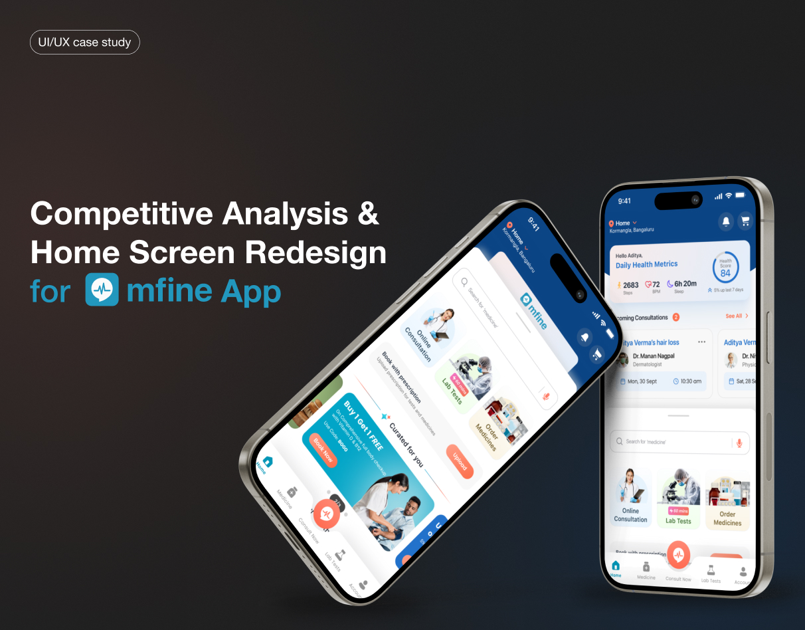

mFine App Redesign
Competitive analysis identifying 12 core friction points, proposed solutions adopted by the product team.
Role
UX Researcher
Timeline
3 Weeks
Focus
Competitive Analysis, Tele-health UX
Impact
Strategic adoption by product team

The Problem
The tele-health market is highly saturated. The mFine app was experiencing drop-offs during the consultation booking flow. I was tasked with performing a tear-down of the existing flow compared to top competitors to identify areas for optimization.
Research & Insights
I analyzed the onboarding, doctor discovery, and payment flows of 4 major competitors. The analysis revealed that mFine required 3 more steps to book a consultation than the industry average, primarily due to an aggressive up-front data collection process.
Users are highly anxious when seeking medical help. Forcing them through a lengthy form before allowing them to see doctor availability was a major conversion killer.
Design Process & Solution
I proposed a "Progressive Profiling" model. Instead of asking for all medical history upfront, the new flow allows users to book a slot immediately after selecting a specialty, deferring the detailed medical questionnaire to the post-booking waiting period.
I also created wireframes for a redesigned doctor discovery interface that prioritized next available slots over comprehensive profiles, catering to urgency.
Results & Takeaways
The proposed progressive profiling flow and the 12 core UX optimizations were presented to the product team and adopted for the Q3 roadmap.
Key Takeaway: In high-stress user contexts (like healthcare), reducing cognitive load and providing immediate reassurance (booking a slot) is critical for conversion.